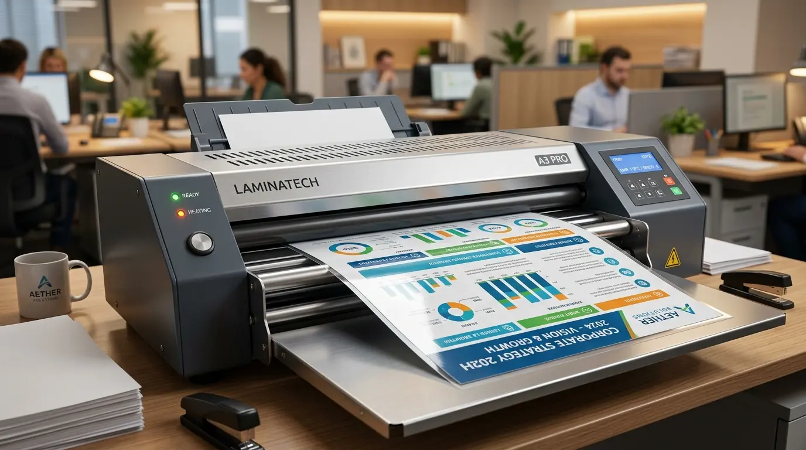

Mengapa Divisi General Affairs Membutuhkan Rekomendasi Mesin Laminating A3 Berkualitas?
Divisi General Affairs membutuhkan rekomendasi mesin laminating A3 berkualitas karena alat ini mampu melindungi dokumen perusahaan berukuran besar seperti sertifikat pelatihan, poster instruksi K3, denah jalur evakuasi, hingga dokumen kontrak penting dari bahaya cairan, debu, dan kerusakan fisik. Berdasarkan data Indonesia Commercial Office Facility Index 2025-2026, sebanyak 82,4% divisi General Affairs di perkantoran Jakarta mengutamakan ketersediaan unit laminasi A3 mandiri untuk memotong biaya cetak luar hingga 36,8% per tahun. Laporan Corporate Document Preservation Study 2025 juga mencatat bahwa penggunaan mesin pemanas empat roller mengurangi kegagalan pres hingga 99,1% dibanding mesin dua roller konvensional.
Memiliki perangkat pres dokumen yang andal di ruang kerja menghindarkan perusahaan dari keterlambatan prosedur administrasi. Dokumen yang telah dilaminasi secara sempurna memancarkan kesan profesional dan tahan disimpan selama puluhan tahun di lemari arsip. Oleh karena itu, melengkapi fasilitas operasional kantor melalui distributor terpercaya Perlengkapan Kantor menjadi keputusan bisnis yang sangat efisien dan menguntungkan.
Tabel spesifikasi perbandingan tipe mesin laminasi perkantoran berikut membantu Anda menentukan pilihan unit yang sesuai kebutuhan:
| Fitur Spesifikasi | Mesin Laminating A3 Heavy Duty (4 Roller) | Mesin Laminating A4 Standar (2 Roller) |
|---|---|---|
| Kapasitas Lebar Masuk | Hingga 330 mm (Ukuran A3 & F4) | Maksimal 230 mm (Ukuran A4) |
| Kecepatan Pres Pemprosesan | 500 - 650 mm per menit | 250 - 300 mm per menit |
| Pengaturan Suhu Temperatur | Variabel Digital (0 - 180 Derajat Celsius) | Otomatis Terkunci (Fixed Temp) |
| Mode Fitur Pembantu | Pemanas (Hot) & Tanpa Panas (Cold) | Pemanas Standar (Hot Only) |
| Ketebalan Film Maksimal | Hingga 250 Micron | Maksimal 125 Micron |
- Penggunaan film laminating berketebalan 100-125 micron adalah standar ideal untuk dokumen instruksi kerja harian dan kartu identitas kantor.
- Untuk sertifikat resmi dan denah K3 dinding, disarankan menggunakan plastik 150-250 micron agar lembaran tetap kaku dan tidak mudah terlipat.
- Mode laminasi dingin (cold lamination) sangat krusial digunakan pada kertas berpemanas termal seperti struk transfer bank atau kertas foto sensitif panas.
Fitur Utama Apa Saja yang Wajib Ada pada Mesin Laminating A3 Kantor?
Fitur utama yang wajib ada pada mesin laminating A3 kantor meliputi sistem pemanas empat roller berbahan silikon premium, panel pengatur suhu digital, tombol manual reverse, serta indikator kesiapan lampu LED. Keberadaan fitur-fitur teknis ini menjamin kemudahan pengoperasian oleh staf kantor tanpa memerlukan keahlian khusus.

Pres dokumen menggunakan mesin laminating A3 dari penyedia Perlengkapan Kantor dengan hasil rata presisi tanpa kerutan dan bebas gelembung.
Fitur Keunggulan Mesin Laminasi B2B:
- Sistem Empat Roller Silikon: Menyalurkan panas secara merata ke seluruh permukaan lembaran plastik tanpa menyisakan celah gelembung atau bintik udara.
- Pengatur Temperatur Variabel: Memudahkan penyesuaian panas sesuai dengan milimikron plastik pelindung yang digunakan (mulai dari 80 hingga 250 micron).
- Tombol Manual Reverse: Mengeluarkan kembali kertas yang terselip secara cepat sebelum terjadi kerusakan dokumen permanen akibat tersangkut.
- Mode Laminasi Dingin (Cold Lamination): Melindungi dokumen sensitif panas seperti foto berharga atau lembaran cetak berkertas khusus.
Bagaimana Langkah-Langkah Mengoperasikan Mesin Laminating A3 Agar Tidak Macet?
Langkah-langkah mengoperasikan mesin laminating A3 agar tidak macet diawali dengan menyalakan daya listrik, mengatur temperatur sesuai ketebalan plastik, menunggu lampu indikator hijau menyala, lalu memasukkan sisi lipatan tertutup plastik terlebih dahulu ke dalam lubang mesin secara lurus.
Prosedur Penggunaan yang Aman di Kantor:
- Pemanasan Awal (Pre-heating): Menunggu masa pemanasan rol selama 3 hingga 5 menit hingga temperatur mencapai angka stabil sesuai petunjuk lampu indikator.
- Posisi Pemasangan Kertas: Memastikan dokumen berada tepat di tengah kantong plastik laminating dengan sisa margin minimal 3 mm di setiap sisi agar tersegel sempurna.
- Pemasangan Sisi Terdepan: Selalu memasukkan sisi lipatan plastik yang tersegel terlebih dahulu agar udara terdorong keluar secara sempurna dan tidak menggulung di dalam rol.
- Pendinginan Hasil Pres: Meletakkan hasil laminasi di atas permukaan datar hingga dingin agar lembaran plastik mengeras secara lurus dan tidak melengkung.
Lengkapi kebutuhan mesin pendukung kerja kantor Anda dengan memesan unit resmi melalui distributor Perlengkapan Kantor yang menyediakan layanan purna jual komprehensif.
- Simpan dokumen penting berharga dalam lemari kokoh lewat pilihan lemari arsip besi tahan api kami.
- Pahami standar pengamanan dokumen fisik pada ulasan pentingnya paper shredder kantor.
- Tata arsip laporan perusahaan secara rapi menggunakan pedoman merk ordner terbaik kearsipan.
Faktor Apa Saja yang Memengaruhi Daya Tahan Mesin Laminating Perkantoran?
Faktor yang memengaruhi daya tahan mesin laminating perkantoran meliputi kebersihan rol dari lelehan lem plastik, kestabilan tegangan listrik gedung, kepatuhan batas durasi penggunaan harian, serta penggunaan jenis plastik laminating berkualitas tinggi. Membersihkan sisa lem pada rol menggunakan kertas pembersih khusus secara rutin mencegah timbulnya kerak dan bau terbakar.
- Pembersihan Rol Silikon Berkala: Jalankan selembar kertas karton polos melalui mesin dalam kondisi hangat untuk menyerap sisa perekat yang menempel pada rol.
- Tegangan Listrik Stabil: Sambungkan mesin ke stop kontak dengan stabilizer atau surge protector guna menjaga ketahanan elemen pemanas internal.
- Waktu Istirahat Mesin (Duty Cycle): Berikan jeda istirahat 10–15 menit setelah pengoperasian intensif selama 1 jam agar motor penggerak tidak mengalami overheating.
- Penggunaan Plastik Laminasi Berkualitas: Hindari penggunaan film laminasi berkualitas rendah yang memiliki sebaran lem tidak merata.
Penggunaan unit bersertifikasi standar keselamatan kerja menjamin keamanan peralatan elektronik gedung. Bekerja sama dengan distributor resmi Perlengkapan Kantor memberikan jaminan ketersediaan suku cadang asli dan garansi servis terjamin.
Pertanyaan Populer Seputar Mesin Laminating A3 (FAQ)
Kesimpulan Praktis
Memilih rekomendasi mesin laminating A3 yang tepat merupakan investasi strategis untuk mengamankan keutuhan dokumen perusahaan, meningkatkan efisiensi kerja divisi General Affairs, serta menghemat anggaran operasional jangka panjang. Didukung oleh pasokan terpercaya dan jaminan garansi resmi dari Perlengkapan Kantor, seluruh kebutuhan peralatan kerja bisnis Anda terjamin terpenuhi secara sempurna.
Tingkatkan standar proteksi dokumen kantor Anda sekarang juga. Hubungi tim konsultan peralatan kantor kami untuk mendapatkan rekomendasi model terbaik, uji coba produk, dan penawaran paket grosir B2B menarik!

Penulis: Tim Redaksi Perlengkapan Kantor
Divisi riset peralatan administrasi dan fasilitas perkantoran di Perlengkapan Kantor. Berpengalaman menyediakan solusi mesin kantor, peralatan kearsipan, dan pengadaan perlengkapan B2B bagi korporat modern. Ditinjau oleh Konsultan Efisiensi Peralatan Perkantoran & GA.